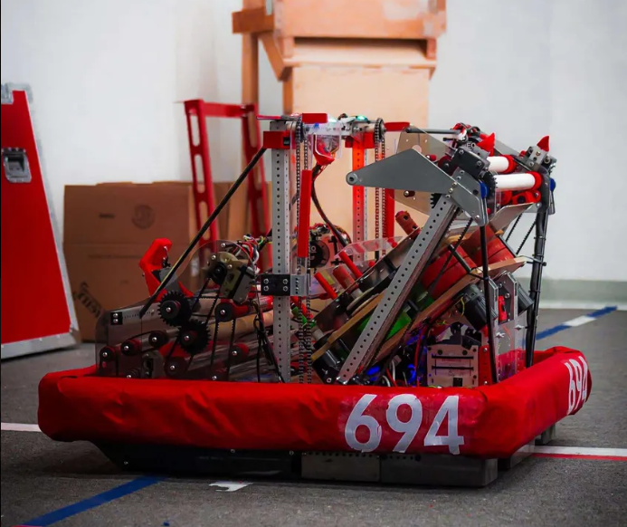
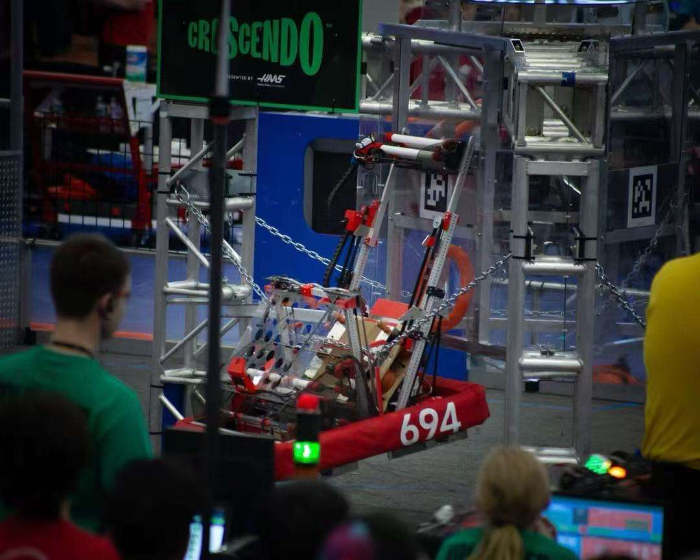

Robot Mechanism
Yaqinator (Multi Roller Amp Scoring System)
A mechanical conveyor system designed to help score points at two different levels during a robotics competition.

Objective
Led a team in building a mechanism to help score point during the FRC 2024 Cresendo Season. The mechanism would need to intake a foam ring game piece with a diameter of 14 inches and lift it to a desired height to score.

Prototyping
The first prototype was made with polycarbonate pipes wrapped in rubber - to increase grip - and alumnimum tubing, powered by drills to test concept and functionality.
Second prototype was made with more persision. In order to test at various scoring angles, the plates was designed with multiple mounting holes. We also descreased the diameter of the rollers by using hex shafts instead to test the limit of the mechanism.
Integration
The final design consisted of two polycarbonate plates, 3D printed roller hubs and gears, and 4 polycarbonate rollers wrapped in rubber like material.
An IR sensor was also added in order to automate the process and increase efficiency of scoring the game piece.
Results
Became championship level team. Mechanism went through 3 regional competitions and championship, with < 1% failure rate.
